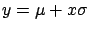
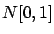
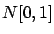
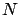
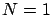
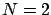
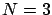

Siguiente: Verificación de línea de
Subir: Algoritmos y cálculos implementados
Anterior: Cálculo de la distancia
Índice General
El modelo de Erceg es el único que dispone de variables aleatorias
en su fórmula de pérdida de camino, variables lognormales que define
mediante los valores de media y varianza. Por ejemplo, sea un
parámetro cualquiera  definido como:
definido como:
 donde  es  es  |
|
En estos casos se optó por usar un criterio conservador, si
aporta positivamente a la atenuación se tomará como:
donde  es un número entero al que llamamos factor de
seguridad. Este valor es configurable por el usuario, de acuerdo a
qué tan conservador el mismo desee ser. Por ejemplo, con 
tendrá un 68.27% de probabilidad de estar por debajo el valor de
, con  la probabilidad ascenderá a 95.5% y con  a
99.73%.
Siguiente: Verificación de línea de
Subir: Algoritmos y cálculos implementados
Anterior: Cálculo de la distancia
Índice General
SAPO